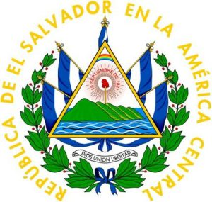
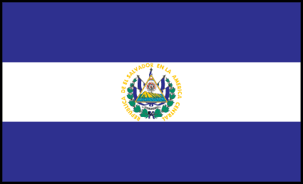
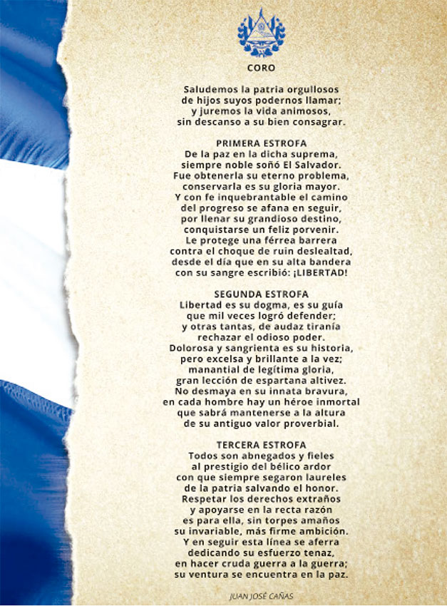
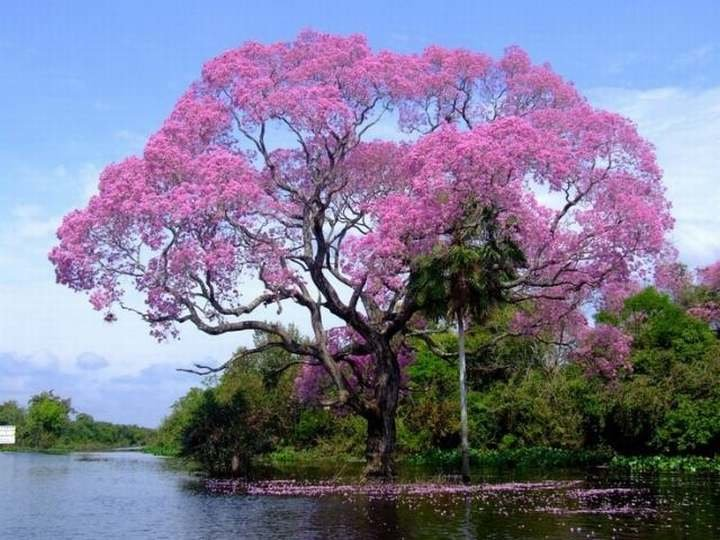
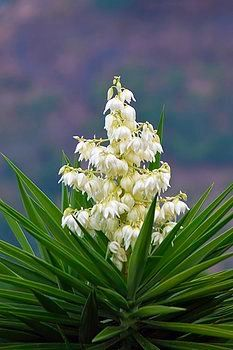
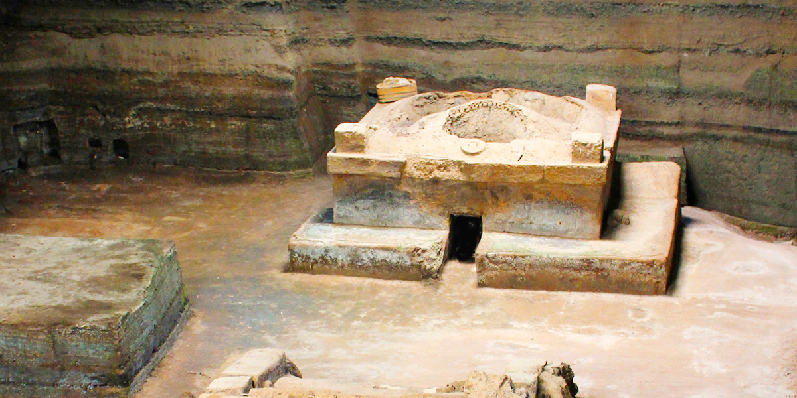
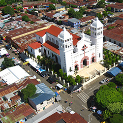
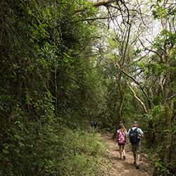
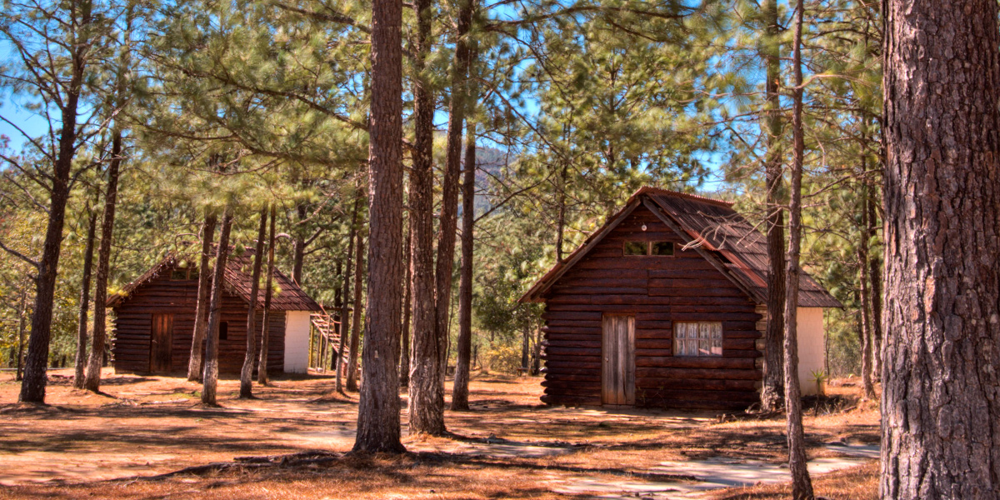
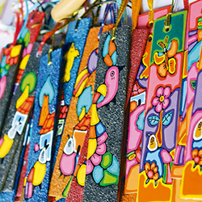

Situada en la costa Pacífica de Centroamérica, la República de
El Salvador, con una población aproximada de 6.5 millones de
habitantes, es el país más pequeño de Centroamérica y el más
densamente poblado de todo el continente americano.
Su capital es San Salvador, la ciudad más grande del país.
Conocido como la Tierra de Volcanes, El Salvador está lleno
de tradiciones y costumbres ancestrales provenientes de las
culturas prehispánicas que se fusionaron con las costumbres
españolas.

Escudo Nacional
El Escudo de El Salvador fue creado junto con la actual Bandera Nacional por el Decreto Legislativo del 17 de mayo de 1912, siendo Presidente de la República el doctor Manuel Enrique Araujo.

Bandera Nacional
La bandera de El Salvador es el pabellón que representa al país, y que, junto al escudo y el himno nacional, tiene la categoría de símbolo patrio.

Himno Nacional
El Himno Nacional de El Salvador fue compuesto por el general salvadoreño Juan José Cañas y el músico italiano Juan Aberle, el cual fue estrenado formalmente el 15 de septiembre de 1879.

Ave Nacional
El torogoz, también conocido popularmente en algunos lugares como talapo, recibió dicho honor por su singular belleza, la cual se observa expresada en su plumaje de múltiples y bellos colores.

Árbol Nacional
Su miel tiene un sabor delicado y color ámbar claro. También tiene propiedades medicinales. Los árboles de Bálsamo y Maquilishuat fueron declarados “Árboles Nacionales de la República”, en 1939, mediante un decreto ejecutivo, que establecía además, el 22 de junio de cada año como “Día del Árbol Nacional”.

Flor Nacional
Decreto que declara a la Flor de Izote como Flor Nacional de El Salvador, en reconocimiento a la identidad representativa de nuestra flora.

Joya de Cerén
Joya de Cerén es un sitio precolombino de El Salvador situado en las proximidades de San Juan Opico y Las Flores, en el departamento de La Libertad, en la región centroccidental de El Salvador.

Juayúa
Juayúa es un municipio del departamento de Sonsonate,
El Salvador. Es parte del recorrido turístico denominado
"Ruta de las Flores", en el occidente del país.

Lago Coatepeque
El lago Coatepeque es un lago de origen volcánico, situado
a 18 km al sur de la ciudad de Santa Ana en el municipio de
El Congo.

Parque Nacional Cerro Verde
El Cerro Verde o Cuntetepeque es un volcán extinto ubicado
en el Departamento de Santa Ana, El Salvador, en la cordillera
de Apaneca.

Perquín
Perquín, es un municipio ubicado en el departamento de Morazán
en la zona oriental de El Salvador.

Pueblo La Palma
La Palma es un municipio de El Salvador perteneciente al
departamento de Chalatenango.